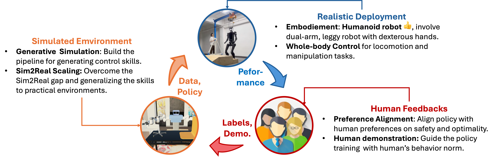
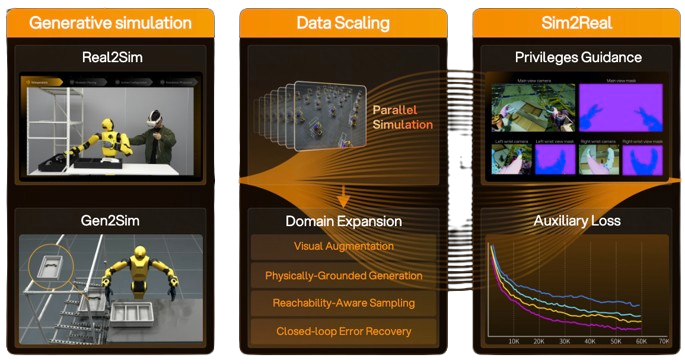
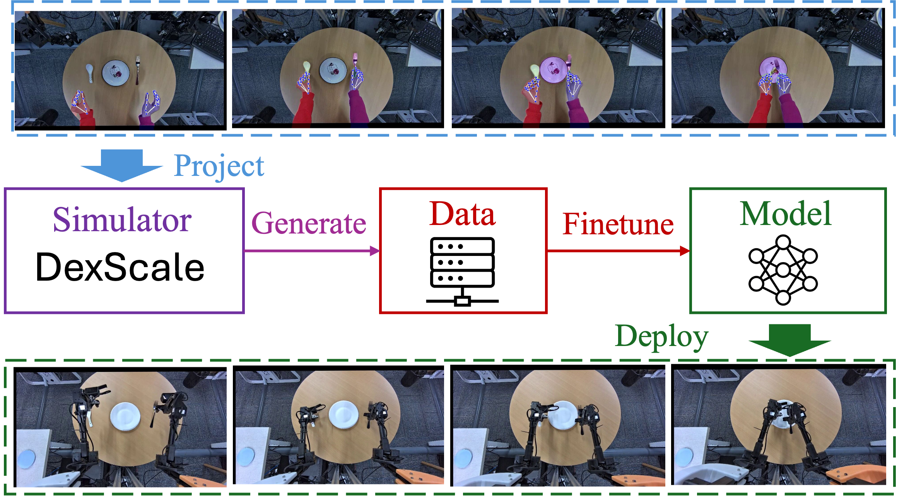
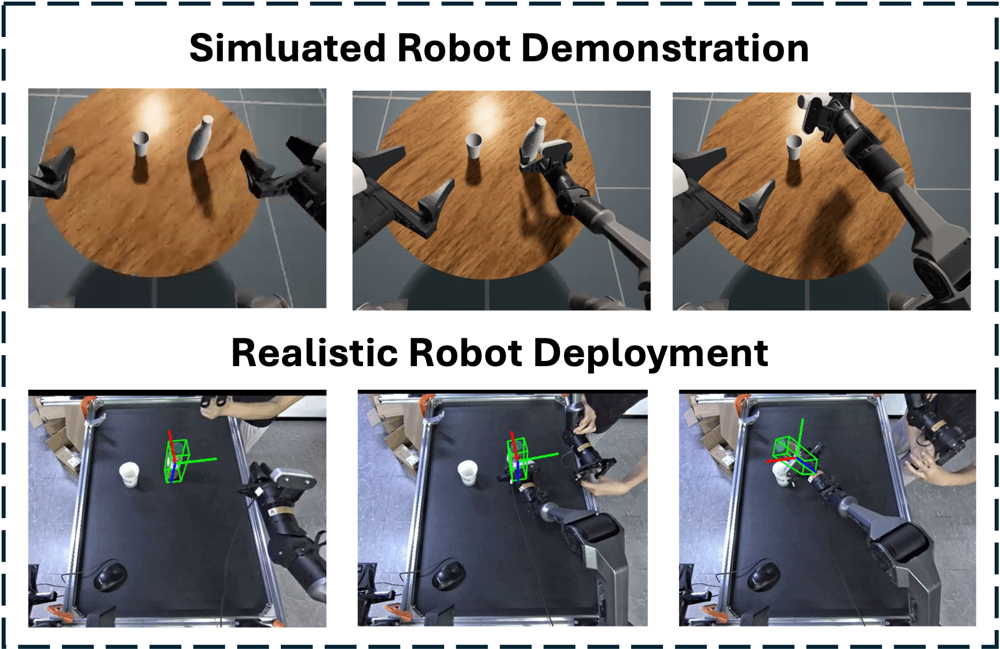
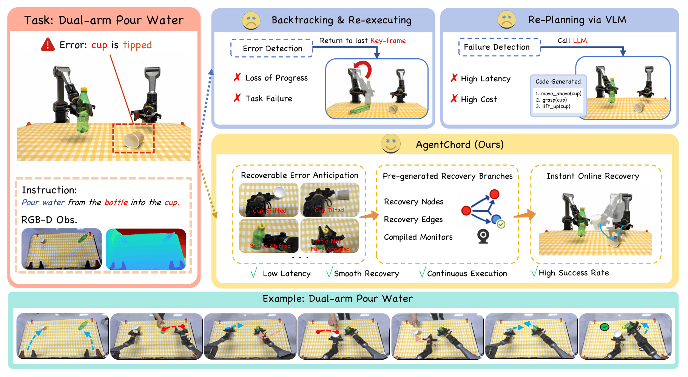
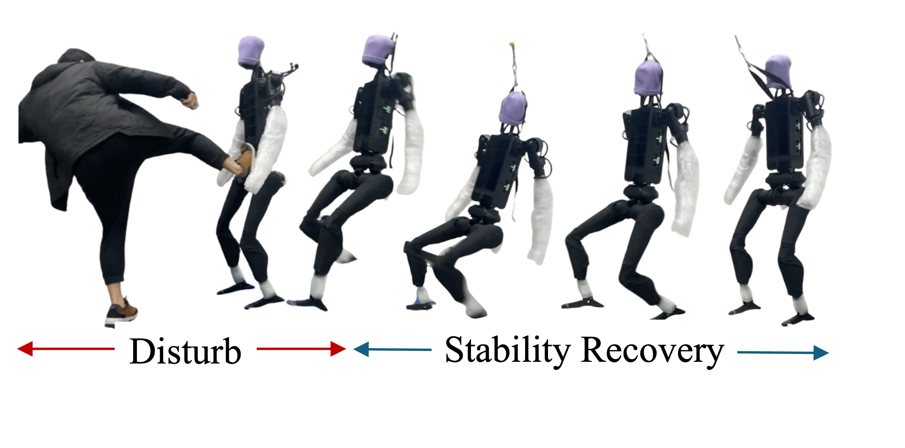
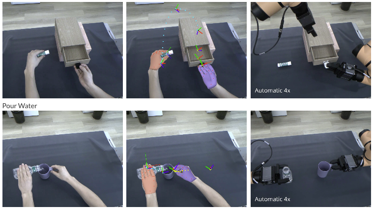
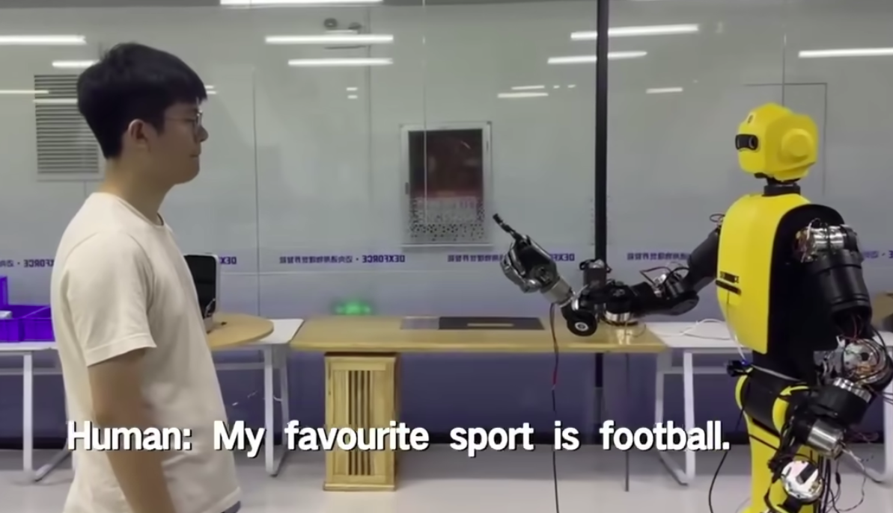
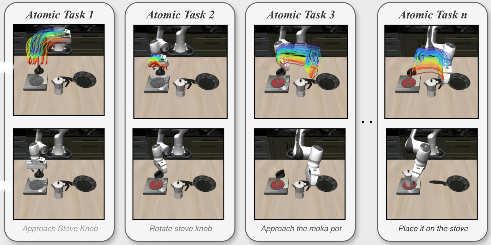

We build embodied agents that can learn broadly, act reliably, and transfer from simulated worlds into physical environments. Our work connects generative robot data, sim-to-real deployment, and human feedback so that decision-making systems become more capable, safer, and useful outside the lab.
Our mission is advancing embodied decision-making systems by facilitating their reliability and generalizability across diverse tasks and environments. This requires tight interaction between simulated environments, real-world deployment, and human feedback.

We develop data engines that generate robot control data in simulated environments and enable generalization to real-world applications.

EmbodiChain Builds richer chains of embodied skills for training general-purpose robot behavior.
DexScale Scales dexterous manipulation data so policies can learn diverse hand-object interactions.
Sim2Real VLA Bridges vision-language-action models from simulated learning to real robotic tasks.
AgentChord Coordinates agentic capabilities into more compositional embodied decision-making workflows.We address real-world problems by validating learned skills and policies through realistic applications across humanoid locomotion, dexterous manipulation, robot communication, and 4D interaction.

HWC-Loco Advances whole-body humanoid locomotion for robust movement in physical environments.
YOTO Improves task-driven robot manipulation with adaptable policies for real-world use.
SignBot Explores embodied communication, making robots more expressive in human-facing settings.
RoboFlow4D Models 4D scene flow for robots, supporting dynamic perception and action in changing worlds.To align robot behavior with human expectations, we incorporate human feedback and inferred constraints into the decision-making process during robot control.